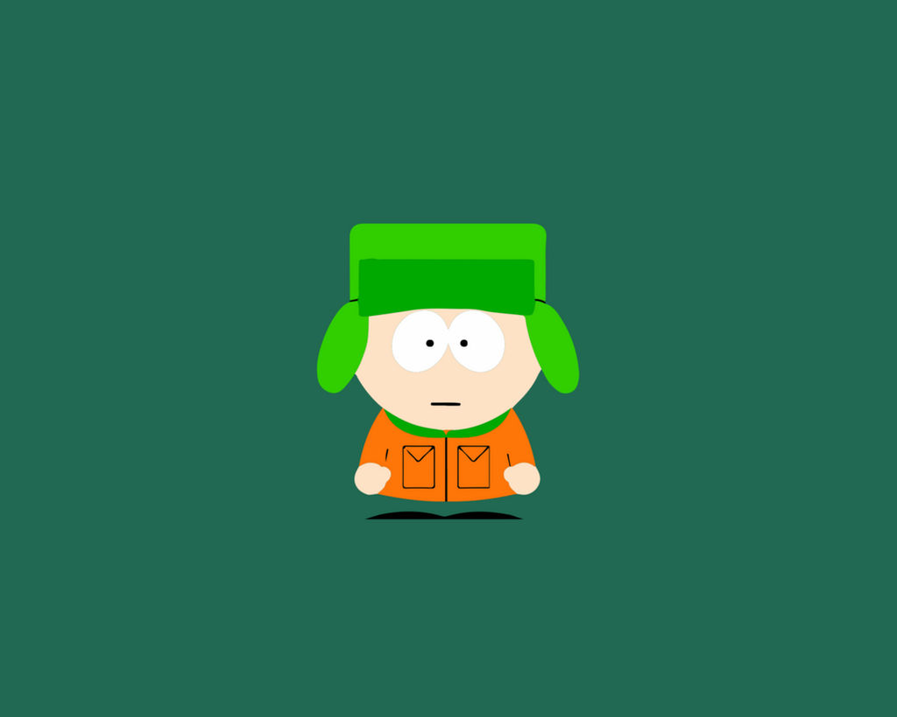
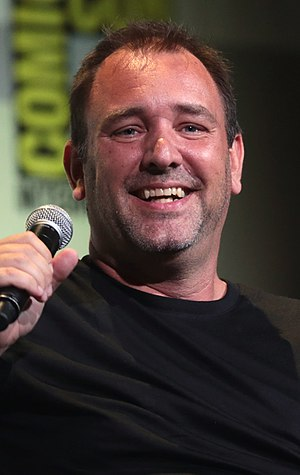
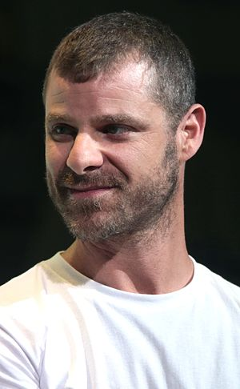

South Park é uma sitcom americana criada por Trey Parker e Matt Stone para o canal Comedy Central. Destinado ao público adulto, o programa tornou-se alvo de debates por suas críticas através de humor negro, cruel, surreal e satírico que abrange uma série de assuntos. A narrativa padrão gira em torno de quatro crianças — Stan Marsh, Kyle Broflovski, Eric Cartman, e Kenny McCormick — e suas aventuras bizarras na cidade-título do programa. Suas aventuras ocorrem na cidade de South Park, município interiorano fictício localizado no verdadeiro vale de South Park nas Montanhas Rochosas, Colorado. A cidade é também o lar de diversos personagens recorrentes da série, como estudantes, famílias, funcionários da escola e moradores variados, que tendem a considerar South Park um lugar tranquilo e pacato de se viver. Entre os locais de destaque no programa estão a escola, o ponto de ônibus, várias lojas e residências e a paisagem enevoada de Colorado, tudo baseado em locais verdadeiros da cidade de Fairplay.Stan é retratado como a pessoa mediana do grupo, com o site oficial do programa descrevendo-o como "um garoto americano normal, comum e ambíguo".Kyle é o único judeu da turma, e sua atuação neste papel é frequentemente levada para o lado satírico.

Stan foi modelado em Parker, enquanto Kyle foi baseado em Stone. Stan e Kyle são melhores amigos, e seu relacionamento, projetado para refletir a amizade entre Parker e Stone na vida real, é um tema comum durante a série. Cartman—barulhento, antipático, preconceituoso e obeso—é frequentemente mostrado como o antagonista, cuja atitude anti-semita resultou numa rivalidade progressiva entre ele e Kyle.Kenny, advindo de uma família humilde, usa o capuz de seu casaco tão apertado que cobre grande parte de seu rosto, dificultando o entendimento de suas falas. Durante as primeiras cinco temporadas do programa, Kenny morreu em praticamente todos os episódios, retornando no episódio seguinte como se nada ou quase nada tivesse acontecido. Ele foi excluído da sexta temporada em 2002, reaparecendo no último episódio daquele ano. Desde então, a prática de matar Kenny raramente é usada pelos criadores do programa.
Produção
Os scripts são, frequentemente, assinados pelos criadores da série, devido ao fato de que, a elaboração de um episódio de South Park é menor do que a de outra série animada. Às vezes, o processo dura apenas uma semana. Ao longo de suas temporadas, a sitcom foi alterando as músicas que ocorreram, mesmo logo após o encerramento da produção de cada capítulo.
Animação
Todos os capítulos de South Park são feitos com animação de computador que imita o padrão dos curtas-metragens. Nas primeiras temporadas, o processo de produção contava com poucos funcionários, e consequentemente, cada capítulo levava três semanas para serem feitos. Hoje, com mais de 70 pessoas que trabalham, os capítulos são concluídos em menos de uma semana.
Produtores
Randolph Severn Parker III nasceu em Conifer, Colorado, nos Estados Unidos e é o filho mais novo de Randy Parker e Sharon Parker. Trey Parker é um animador, diretor, produtor, roteirista, dublador, ator e músico norte-americano.

Matthew Richard Stone nasceu em 26 de maio de 1971 em Houston, Texas, filho do professor de economia Gerald Whitney Stone e Sheila Lois (Belasco). Matt Stone é um animador, roteirista, diretor cinematográfico, dublador e ator americano.
